Philippines
14 restaurants · 85 photos
NZ/AU ?
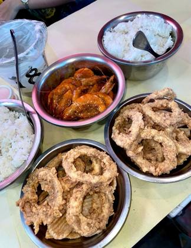
I Love Bucket ShrimpsCebu City · 8NZ/AU ?Blue Posts Boiling Crabs & ShrimpsDavao · 8NZ/AU ?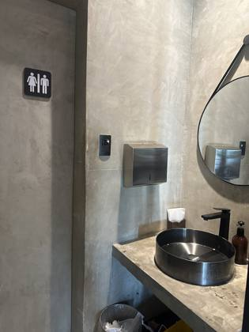
Mad Cajun Seafood BoilAntipolo · 6NZ/AU ?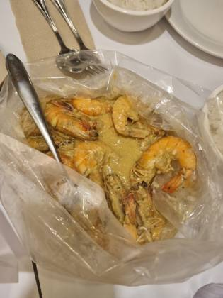
Shrimp BucketMakati City · 6NZ/AU ?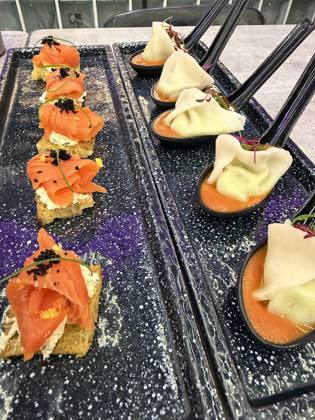
Claw ManilaPasig City · 6NZ/AU ?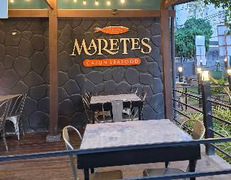
Maretes Cajun SeafoodMandaue City · 6NZ/AU ?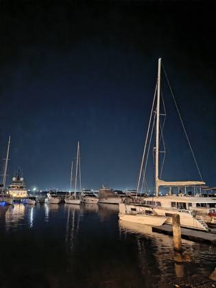
Seafood Boil Grill & RestaurantBuagsong · 6NZ/AU ?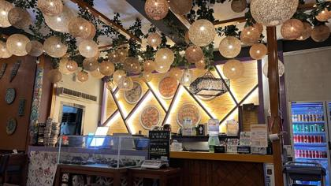
Crab boil & BBQGabi · 6NZ/AU ?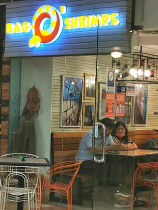
Bag O' ShrimpsPasig City · 6NZ/AU ?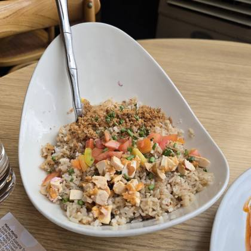
Urban Crab Seafood ShackPort Area · 6NZ/AU ?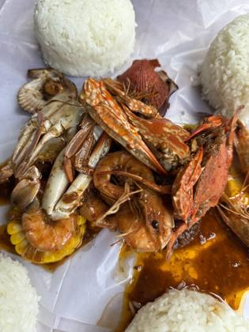
Muk-Ja Cajun SeafoodMandaue City · 6NZ/AU ?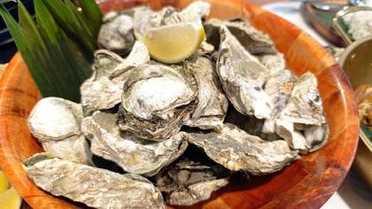
Sisid Filipino Seafood Boil ShackQuezon City · 6NZ/AU ?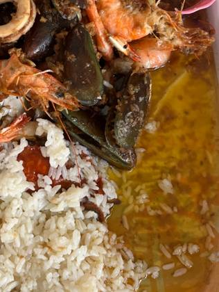
Seafood Bucket Unlimited ParañaqueSambayanihan People's Village · 5NZ/AU ?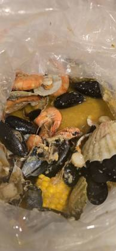
The Orange BucketMakati City · 4Every boil listing found · 32
Google Maps listings whose name says boil / crawfish / Cajun / crab etc. Swept 20 Oct 2026. Not all verified as bag boils; tap to open the listing.
Antipolo · 1
- Mad Cajun Seafood Boil Antipolo · ★4.9 (810)
Bagong Pagasa · 1
- Shrimp Bucket Trinoma Bagong Pagasa, 10 AM · ★4.8 (258)
Baguio · 1
- Seafood Island Camp John Hay Baguio Baguio · ★3.9 (355)
Buagsong · 2
- Seafood Boil Grill & Restaurant Buagsong, 8XHG+9F8, F. Martir Street · ★4.1 (208)
- Seafood Boil Grill & Restaurant - Mandaue Buagsong · ★4.3 (41)
Bulaon · 1
- The Orange Bucket, Cajun-Fusion Restaurant Bulaon, Opens 11 AM · ★4.3 (370)
Cebu City · 1
- I Love Bucket Shrimps - Capitol Cebu City, 11 A. Climaco St · ★4.4 (714)
Davao · 4
- Blue Posts Boiling Crabs & Shrimps - Buhangin Davao · ★4.3 (18)
- Blue Posts Boiling Crabs & Shrimps – Bajada Davao · ★4.3 (536)
- Blue Posts Boiling Crabs & Shrimps – SM City Davao Annex Davao · ★3.4 (53)
- Crabs & Co. Seafood Buffet Davao, Juna Subdivision, 425 Tulip Dr · ★4.3 (237)
Gabi · 2
- Cebu Crab Seafoods Restaurant JPARK Gabi · ★4.6 (236)
- Crab boil & BBQ - MARIBAGO BRANCH Gabi · ★4.5 (139)
La Trinidad · 1
- Seafood Bucket Express La Trinidad · ★4.8 (12)
Makati City · 6
- Burnt Edges by Shrimp Bucket Glorietta Makati City, K-Park, Roof Deck of Glorietta, 1 Ayala Ave · ★4.8 (317)
- Shrimp Bucket BGC Makati City, The Grand Hamptons Tower 1, G/F The Grand Hamptons Tower 1 2nd Avenue, corner 31st Street · ★4.5 (701)
- Shrimp Bucket Newport World Resorts Makati City, Opens 11 AM · ★4.8 (143)
- The Orange Bucket Makati City, Opens 11 AM · ★4.1 (271)
- The Orange Bucket BGC Makati City, Ground Floor of, Avida Towers Turf, Tower 1, 9th Ave · ★4.4 (154)
- The Orange Bucket-Newport City Makati City, A1-A6, Palm Tree Villa 2, Newport City · ★4.0 (773)
Mandaluyong City · 1
- Shrimp Bucket Ayala Malls Circuit Makati Mandaluyong City, Opens 11 AM · ★4.5 (195)
Mandaue City · 3
- Cajun Seafood Bantayan Island's Original Mandaue City · ★4.0 (2)
- Maretes Cajun Seafood Mandaue City, 19 Pres. Quirino St · ★4.1 (240)
- Muk-Ja Cajun Seafood Mandaue City · ★3.9 (71)
Pasig City · 4
- Bag O' Shrimps SM Megamall Pasig City, 3rd floor Atrium building, SM Megamall · ★4.1 (93)
- Claw Manila Pasig City · ★4.8 (375)
- Shrimp Bucket Ayala Malls 30th Pasig City, 2/F, Ayala Malls The 30th, 30 Meralco Ave · ★4.7 (224)
- Shrimp Bucket Rockwell Sheridan Pasig City, Opens 11 AM · ★4.7 (64)
Port Area · 1
- Urban Crab Seafood Shack Port Area, 1616, Tetra Global Bldg, Vasquez St · ★4.1 (85)
Quezon City · 1
- Sisid Filipino Seafood Boil Shack Quezon City, Unit G1, SMRC Building, 155 B. Gonzales · ★4.6 (44) · temporarily closed
Sambayanihan People's Village · 1
- Seafood Bucket Unlimited Parañaque Sambayanihan People's Village · ★4.5 (30)
Taguig · 1
- Laurine’s Seafood boil Taguig, G38M+27M · ★5.0 (1)